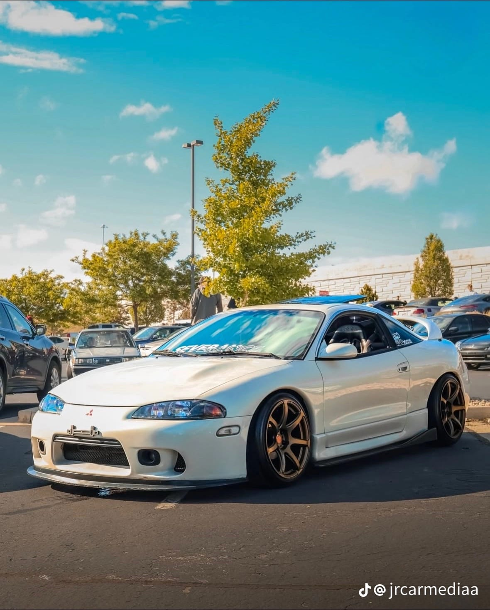

| Datos |
Generacion | Pasion sobre ruedas |
Evolucion |
Tipos Autos |
Historia |
carros clasicos |
Arte |
Carros |
Videos |
Formulario | Coches deportivos |
El Mitsubishi Lancer es un automóvil de turismo del segmento C, producido por el fabricante japonés Mitsubishi Motors desde 1973 hasta 2017. Se trata de un auto muy exitoso en todas sus versiones, durable, con una fiabilidad de enorme reputación, sea en cupé o sedán, familiar, 3 y 5 puertas, por sus magníficas mecánicas, sus características y cualidades en el mundo de Rallys, gozando de una gran popularidad y aceptación. Es el mayor ganador del Rally Safari Kenia y uno de los mayores ganadores del mundial de Rallys, por su reconocida robustez. Existen ocho generaciones del Lancer, la última de las cuales fue presentada oficialmente en el Salón del Automóvil de Detroit del año 2007. En 2017, Mitsubishi anunció oficialmente que dejarán de fabricar este modelo y no tendrá un reemplazo posteriormente. Según la generación, el Lancer existió con carrocerías cupé, sedán, hatchback y familiar, con tracción trasera, delantera o tracción a las cuatro ruedas. En algunos mercados, la versión hatchback de algunas generaciones se vendió con los nombres Colt y Mirage. El fabricante malayo Proton ha fabricado la tercera generación del Lancer como el Saga, y la quinta generación, con los nombres Satria, Wira y Putra. A la fecha, ha vendido alrededor del mundo más de 10 millones de unidades.[1]
El primer Lancer (A70) se lanzó en febrero de 1973. Sirvió para llenar el hueco entre el Minica kei car y el Galant, de mayor tamaño. El modelo deportivo 1600 GSR inició la larga y exitosa historia del Lancer en los rallies, ganando dos veces el Rally Safari y cuatro veces el Rally Southern Cross. Había cuatro tipos de carrocería, berlinas de dos y cuatro puertas, un cupé de dos puertas con techo rígido y una ranchera de cinco puertas (fabricada hasta que fue sustituida por el Lancer/Mirage Van de tracción delantera en marzo de 1984). Los motores eran diferentes, de 1,2, 1,4 y 1,6 litros. Este coche se comercializó con distintos nombres: Dodge Colt en Estados Unidos, Plymouth Colt en Canadá, Dodge Lancer en algunos países latinoamericanos, Chrysler Valiant Lancer en Australia y Colt Lancer en algunos mercados europeos.
En 1979 se presentó en Japón el nuevo Lancer EX. Su nuevo estilo, limpio y aerodinámico, con parachoques de plástico integrados, reflejaba el de los recién presentados Galant y Sapporo. Tenía un aspecto más europeo que los anteriores vehículos Mitsubishi.[3] Esta generación solo estaba disponible como sedán de 4 puertas; la versión de 2 puertas se suprimió, mientras que el Celeste cupé y el wagon/furgoneta de la generación anterior se mantuvieron durante unos años más. Era considerablemente más espacioso, creció en todas las dimensiones. [4] Al principio sólo se ofrecían dos motores, uno de 1,4 litros equipado con el sistema MCA-Jet emparejado con la tecnología Silent Shaft de Mitsubishi, que generaba 80 CV (79 hp; 59 kW) y otro de 1,6 litros que generaba 85 CV (84 hp; 63 kW). El sistema MCA-Jet era un concepto totalmente nuevo en comparación con el sistema de carburador utilizado anteriormente. MCA son las siglas de Mitsubishi Clean Air (Aire Limpio de Mitsubishi), lo que significaba que el EX superaba las normas de emisiones tanto de Japón como de EE. UU., mientras que el nuevo diseño de la culata del motor daba paso a una válvula Jet que introducía un remolino adicional de aire en la cámara de combustión, arremolinando la mezcla de combustible y aire para conseguir una combustión más limpia, eficiente y completa.
Mitsubishi introdujo en Japón el Mirage de tercera generación, de formas más redondeadas. Masaru Furukawa dirigió el diseño del vehículo, y Yasukichi Akamatsu asumió el papel de ingeniero jefe. El modelo básico, un hatchback de tres puertas con portón trasero vertical y gran ventanal, llegó primero. El sedán, lanzado en Japón en enero de 1988, tenía un estilo distinto, con una ventana trasera casi vertical, influenciada por el Galant de mayor tamaño. La gama se complementó con un liftback de cinco puertas en junio de 1988, pero sin una variante familiar, Mitsubishi perseveró con el modelo anterior hasta el lanzamiento de un nuevo familiar con el chasis de cuarta generación. Como antes, los nombres de Mirage, Colt y Lancer variaban entre los mercados, y las diferentes formas de carrocería a menudo tenían diferentes títulos en el mismo mercado. En Japón, los sedán estaban disponibles con las placas de identificación Mirage y Lancer, mientras que el de tres puertas se vendía solo como Mirage y el liftback solo como Lancer. Los sedán Mirage japoneses generalmente presentaban el sufijo "Vie Saloon".
La cuarta generación tenía diferencias estilísticas visibles entre el Lancer y el Mirage. De nuevo apareció una variante sedán de dos puertas, con silueta idéntica a la del sedán de cuatro puertas. Los motores eran un 1.3 litros de 75 CV (55 kilovatios), un 1.5 litros de 90 CV (66 kilovatios), un 1.6 litros de 113 CV (83 kilovatios) (este último en versiones de tracción delantera y a las cuatro ruedas) y un 1.8 litros de 117 CV (86 kilovatios) o 140 CV (103 kilovatios). Es la única generación que tuvo disponible una versión con un motor que no era cuatro cilindros en línea, un atmosférico V6 de 1.6 litros de cuatro válvulas por cilindro y una potencia máxima de 140 CV (103 kilovatios) o 160 CV (118 kilovatios), denominado "Cyborg R".
La quinta generación repitió carrocerías y versiones deportivas, aunque con motores actualizados. Los motores eran un 1.3 litros de 75 CV, un 1.5 litros de 90 CV, un 1.6 litros de 105 CV; y un 1.8 litros de 125 CV. Además de los 1.8 y 2.0 turbocargados de las versiones GSR y Evolution. Las tres ediciones Evolution de esta generación del Lancer son: las IV, V y VI. En países como Chile y Argentina, llegaron las versiones GLXI 1.3 y 1.6 que contaban con una caja de transmisión mecánica de 5 velocidades y automática de 4 velocidades. En Venezuela se comercializó una versión más económica, compacta y de motor sincrónico de 5 velocidades bajo el nombre Mitsubishi Signo, el cual fue vendido hasta el 2010.
